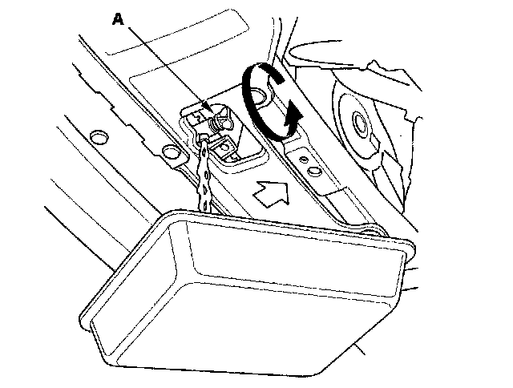
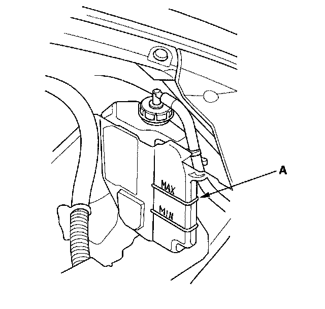
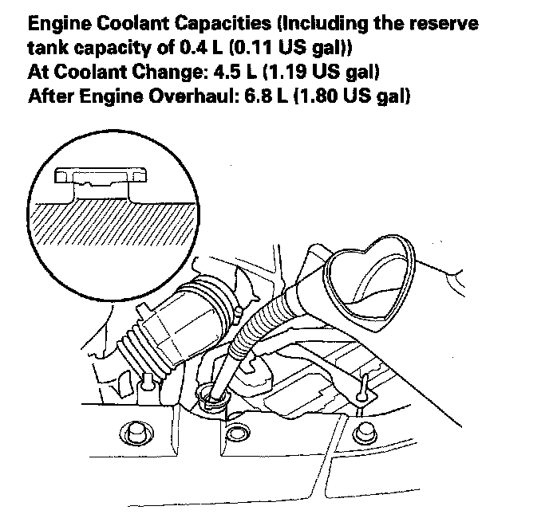

Coolant: Service and Repair
Coolant Replacement1. Start the engine. Set the heater temperature control dial to maximum heat, then turn off the ignition switch. Make sure the engine and radiator are cool to the touch.
2. Remove the radiator cap.
3. Loosen the drain plug (A), and drain the coolant.

4. After the coolant has drained, tighten the radiator drain plug.
5. Remove the coolant reservoir, and drain the coolant, then reinstall the coolant reservoir.
6. Fill the coolant reservoir to the MAX mark (A) with Honda Long Life Antifreeze/Coolant Type 2 (P/N OL999-9001).

7. Pour Honda Long Life Antifreeze/Coolant Type 2 (P/N OL999-9001) into the radiator up to the base of the filler neck.
NOTE:
^ Always use Honda Long Life Antifreeze/Coolant Type 2 (P/N OL999-9001). Using a non-Honda coolant can result in corrosion, causing the cooling system to malfunction or fail.
^ Honda Long Life Antifreeze/Coolant Type 2 is a mixture of 50 % antifreeze and 50 % water. Do not add water.

8. Loosely install the radiator cap.
9. Start the engine, and let it run until it warms up (the radiator fan comes on at least twice).
10. Turn off the engine. Check the level in the radiator, and add Honda Long Life Antifreeze/Coolant Type 2, if needed.
11. Put the radiator cap on tightly, then run the engine again, and check for leaks.
12. Clean up any spilled engine coolant.